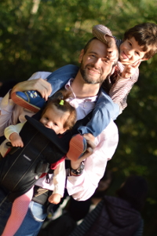

Francesco Zanlungo, PhD
Personal My biggest passions are my family, foreign languages and sports. FamilyI am married to Zeynep and we are the parents of Alessandro 龍 Bilge and Sofia 秋 Yasemin. Foreign languages and translationsMy native is Italian and I am fluent in Japanese, Spanish and Porteguese. Besides, I have a good knowledge of French and a basic knowledge of Chinese. Currently I am learning Turkish. I also do translations from Japanese to Italian. These include the novel GO by Kazuki Kaneshiro and some works by Haruki Murakami (also a couple of chapters of 1Q84). If you're interested in reading my translations, contact me by e-mail at SportsI am interested in basketball, running, swimming and cycling. I played basketball for 10 years prior to my injuries. Later, I took an interest in marathons and ran more than 10 marathons including 3 editions of the Rome, Kyoto and Nara marathon. I also participated in many triathlons including the long distance triathlons in Mergozzo 2009 and Irago 2014, and in two editions of the Oogigahama 4 km swimming event. Other hobbiesI also like travelling, cats, walking, 漢字, books, 温泉. Without forgetting what's life about after all 飲食男女... My blog and other websiteClick here to read my blog and here for my old website. They are quite outdated though. |
|
|